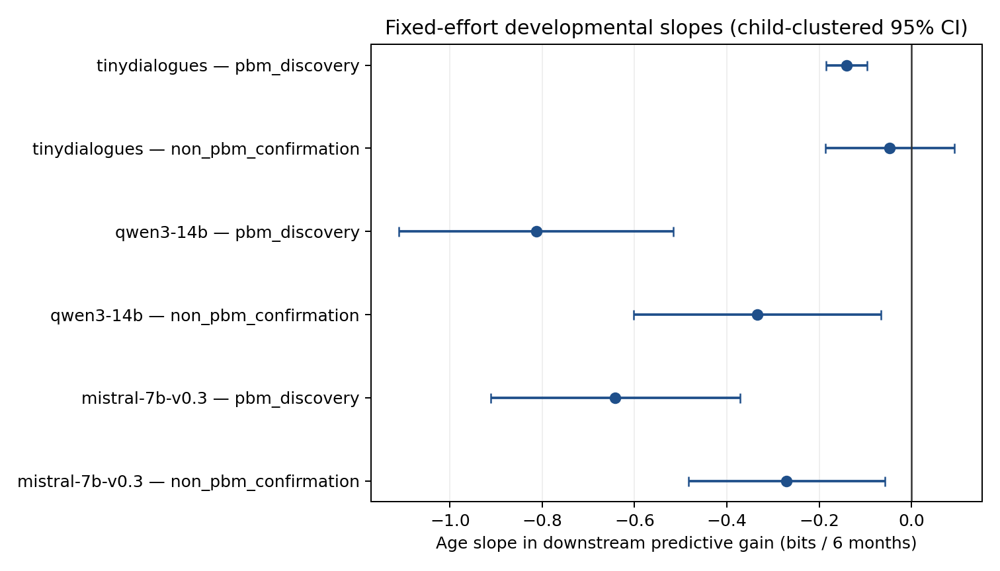

Frozen-protocol analysis · strict-naturalistic CHILDES · three scorers reported separately
U = surprisal(response | earlier context) − surprisal(response | earlier context + actual child utterance). Positive U means the child utterance helps predict the actual next caregiver response. This is a scorer-based downstream proxy, not causal proof, comprehension, or communicative success.
| outcome | scorer_key | scope | matched_gain_positive | matched_beats_shuffle | positive_age_slope | all_three_gates |
|---|---|---|---|---|---|---|
| mistral-7b-v0.3 | non_pbm_confirmation | PASS | PASS | FAIL | FAIL | |
| mistral-7b-v0.3 | pbm_discovery | PASS | PASS | FAIL | FAIL | |
| qwen3-14b | non_pbm_confirmation | PASS | PASS | FAIL | FAIL | |
| qwen3-14b | pbm_discovery | PASS | PASS | FAIL | FAIL | |
| tinydialogues | non_pbm_confirmation | PASS | PASS | FAIL | FAIL | |
| tinydialogues | pbm_discovery | PASS | PASS | FAIL | FAIL |

| scorer_key | scope | slope_bits_per_6m | cluster_ci_6m | bootstrap_ci_6m | source_rows | children |
|---|---|---|---|---|---|---|
| mistral-7b-v0.3 | pbm_discovery | -0.642 | [-0.912, -0.371] | [-0.877, -0.386] | 174860.000 | 21.000 |
| mistral-7b-v0.3 | non_pbm_confirmation | -0.271 | [-0.484, -0.058] | [-0.539, -0.124] | 238224.000 | 58.000 |
| qwen3-14b | pbm_discovery | -0.813 | [-1.110, -0.516] | [-1.080, -0.536] | 174860.000 | 21.000 |
| qwen3-14b | non_pbm_confirmation | -0.334 | [-0.601, -0.066] | [-0.667, -0.151] | 238224.000 | 58.000 |
| tinydialogues | pbm_discovery | -0.141 | [-0.185, -0.096] | [-0.189, -0.102] | 174860.000 | 21.000 |
| tinydialogues | non_pbm_confirmation | -0.047 | [-0.187, 0.093] | [-0.231, 0.047] | 238224.000 | 58.000 |
These are equal-child-weight means. All confidence intervals below are 1,000-draw whole-child bootstrap intervals.
| scorer_key | scope | outcome | mean | bootstrap_ci | children_positive_fraction |
|---|---|---|---|---|---|
| mistral-7b-v0.3 | pbm_discovery | downstream_gain_bits | 3.671 | [3.232, 4.121] | 1.000 |
| mistral-7b-v0.3 | pbm_discovery | matched_over_shuffled_bits | 3.778 | [3.347, 4.261] | 1.000 |
| mistral-7b-v0.3 | non_pbm_confirmation | downstream_gain_bits | 2.794 | [2.537, 3.088] | 1.000 |
| mistral-7b-v0.3 | non_pbm_confirmation | matched_over_shuffled_bits | 2.686 | [2.341, 3.044] | 1.000 |
| qwen3-14b | pbm_discovery | downstream_gain_bits | 4.120 | [3.613, 4.657] | 1.000 |
| qwen3-14b | pbm_discovery | matched_over_shuffled_bits | 3.964 | [3.476, 4.508] | 1.000 |
| qwen3-14b | non_pbm_confirmation | downstream_gain_bits | 2.931 | [2.613, 3.281] | 1.000 |
| qwen3-14b | non_pbm_confirmation | matched_over_shuffled_bits | 2.719 | [2.327, 3.126] | 1.000 |
| tinydialogues | pbm_discovery | downstream_gain_bits | 0.306 | [0.130, 0.433] | 0.952 |
| tinydialogues | pbm_discovery | matched_over_shuffled_bits | 0.487 | [0.420, 0.558] | 1.000 |
| tinydialogues | non_pbm_confirmation | downstream_gain_bits | 0.211 | [0.090, 0.327] | 0.810 |
| tinydialogues | non_pbm_confirmation | matched_over_shuffled_bits | 0.400 | [0.304, 0.483] | 0.862 |
All 1,656 registered leave-one-child and leave-one-corpus fits passed. Mistral and Qwen confirmation slopes remain negative under every deletion; TinyDialogues remains near zero.
| model_id | removed_unit_type | range_bits_per_6m |
|---|---|---|
| mistral-7b-v0.3__non_pbm_confirmation__downstream_gain_bits | child | [-0.405, -0.206] |
| mistral-7b-v0.3__non_pbm_confirmation__downstream_gain_bits | corpus | [-0.451, -0.205] |
| mistral-7b-v0.3__pbm_discovery__downstream_gain_bits | child | [-0.752, -0.546] |
| mistral-7b-v0.3__pbm_discovery__downstream_gain_bits | corpus | [-0.764, -0.423] |
| qwen3-14b__non_pbm_confirmation__downstream_gain_bits | child | [-0.505, -0.254] |
| qwen3-14b__non_pbm_confirmation__downstream_gain_bits | corpus | [-0.560, -0.252] |
| qwen3-14b__pbm_discovery__downstream_gain_bits | child | [-0.932, -0.706] |
| qwen3-14b__pbm_discovery__downstream_gain_bits | corpus | [-0.929, -0.621] |
| tinydialogues__non_pbm_confirmation__downstream_gain_bits | child | [-0.124, 0.013] |
| tinydialogues__non_pbm_confirmation__downstream_gain_bits | corpus | [-0.052, -0.040] |
| tinydialogues__pbm_discovery__downstream_gain_bits | child | [-0.154, -0.132] |
| tinydialogues__pbm_discovery__downstream_gain_bits | corpus | [-0.169, -0.109] |
The primary cell model controls exact/top-coded child word count, caregiver-response word count, and stable child identity, with opportunity weights and child-clustered covariance. PBM contains Brown, Manchester, and Providence (21 children; 174,860 triads); the independent confirmation contains the other 58 children (238,224 triads). Raw bits were never pooled across tokenizers.
A negative age slope does not show that children become worse communicators. It shows that, under this specific next-caregiver-response predictive-gain operationalization and these controls, the observed child turn contributes less additional model-predictive information with age. Observational turn sequences do not identify a causal child→caregiver effect.